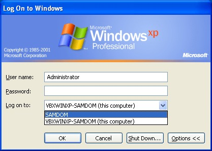
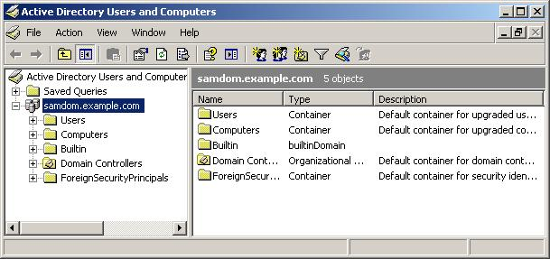

Themen
- Was ist Samba NICHT
- Was ist Samba
- Geschichte
- Was kann Samba
- Unterstützung
- Was ist neu an Samba4
- Windows
- Vor-/Nachteile
- Installation
- Basics
- Windows einbinden
- Administration
- Windows Remote Server Administration Tools
- Linux commandline
-
Was ist Samba NICHT
-

-
Was ist Samba
-
- Software
- Verbindung von heterogenen Systemen
- Datei / Druckserver
- Authentifizierungsserver
- Windows Internet Name Service (WINS) Server
-
Was kann Samba sonst noch
-
- Emulieren eines Active Directory domain controllers
- Backup Server für Windows Active Directory
- Mitglied einer Active Directory domain
- SMART Card login
-
Was ist Samba
-
- Geschichte
-
- 1992 von Andrew Tridgell
- "SMB-Server" war patentiert
- Portierung auf Linux
- Dauerhafte Weiterentwicklung
- 2000 Abspaltung von Samba-TNG
- 20 Kernentwickler
- Momentane Version: 4.0.0rc6
Was ist Samba
- Unterstützung
- Windows (2000|XP|Vista|7|8)
- BSD (FreeBSD|OpenBSD)
- Linux (z.B. debian,SuSe,RetHat,Slackware,CentOS,...)
- OS X
- Novell Netware
- Solaris
Was ist neu an Samba4
- Windows
- Active Directory Logon Umgebung
- NTVFS als Alternative zu smbd
- Problemloser Domänenbeitritt
Vorteile
- Kostenlos
- Dauerhafte Weiterentwicklung
- Aktive Community
- Flexibel in der Anwendung
- Stabil
- Gut skalierbar
- Geringe Hardwareanforderungen
Nachteile
- Keine Garantie auf Support
- Möglicherweise lange Wartezeiten auf Bugfixes
Installation
- Vorraussetzungen
# apt-get install build-essential libacl1-dev libattr1-dev \ libblkid-dev libgnutls-dev libreadline-dev python-dev \ python-dnspython gdb pkg-config libpopt-dev libldap2-dev \ dnsutils libbsd-dev attr krb5-user docbook-xsl
Installation
- Herunterladen
$ git clone git://git.samba.org/samba.git samba-master Cloning into 'samba-master'... remote: Counting objects: 1105381, done. remote: Compressing objects: 88% (215505/244892) eceiving objects: 0% (1/1 remote: Compressing objects: 100% (244892/244892), done. Receiving objects: 100% (1105381/1105381), 215.44 MiB | 19.29 MiB/s, done. remote: Total 1105381 (delta 855035), reused 1105019 (delta 854764) Resolving deltas: 100% (855035/855035), done. Checking out files: 100% (7151/7151), done. $ cd samba-master
Installation
- Konfigurieren
$ ./configure --enable-debug --enable-selftest fkasper@yoda-sam:~/samba-master$ ./configure --enable-debug --enable-selftest Checking for program gcc or cc : /usr/bin/gcc Checking for program cpp : /usr/bin/cpp Checking for program ar : /usr/bin/ar Checking for program ranlib : /usr/bin/ranlib Checking for gcc : ok Checking for program git : /usr/bin/git Check for -MD : yes Checking for program gdb : /usr/bin/gdb Checking build system : Linux yoda-sam 3.2.0-35-generic #55-Ubuntu SMP Wed Dec 5 17:42:16 UTC 2012 x86_64 x86_64 x86_64 GNU/Linux Checking for header sys/utsname.h : yes Checking uname sysname type : Linux Checking uname machine type : x86_64 Checking uname release type : 3.2.0-35-generic Checking uname version type : #55-Ubuntu SMP Wed Dec 5 17:42:16 UTC 2012 Checking for header stdio.h : yes Checking simple C program : ok Checking for rpath library support : ok Checking for -Wl,--version-script support : ok Checking compiler accepts -fPIC : yes Checking for inline : inline Checking for pkg-config version >= 0.0.0 : yes Checking for header sys/types.h : yes Checking for header sys/stat.h : yes Checking for header stdlib.h : yes Checking for header stddef.h : yes Checking for header memory.h : yes Checking for header string.h : yes Checking for header strings.h : yes Checking for header inttypes.h : yes Checking for header stdint.h : yes Checking for header unistd.h : yes Checking for header minix/config.h : no Checking for header ctype.h : yes Checking for header standards.h : no Checking for header stdbool.h : yes Checking for header stdarg.h : yes Checking for header vararg.h : no Checking for header limits.h : yes Checking for header assert.h : yes Checking getconf LFS_CFLAGS : not found Checking getconf large file support flags work : ok Checking for large file support without additional flags : ok Checking for header sys/time.h : yes Checking for header time.h : yes Checking for WORDS_BIGENDIAN : not found Checking for header signal.h : yes Checking if signal handlers return int : not found Checking for variable __FUNCTION__ : ok Checking for va_copy : ok Checking for HAVE__VA_ARGS__MACRO : ok Checking compiler accepts [''] : yes Checking compiler accepts ['-Wstack-protector'] : yes Checking compiler accepts ['-Werror'] : yes Checking for header linux/types.h : yes Checking for header crypt.h : yes Checking for header locale.h : yes
Installation
- Bauen
$ make fkasper@yoda-sam:~/samba-master$ make > ../output 1>&2 WAF_MAKE=1 python ./buildtools/bin/waf build Waf: Entering directory `/home/fkasper/samba-master/bin' Selected embedded Heimdal build [ 132/3816] Generating VERSION [ 167/3816] Generating smbd/build_options.c . . . Waf: Leaving directory `/home/fkasper/samba-master/bin' 'build' finished successfully (4067s)
Installation
- Installieren
# make install fkasper@yoda-sam:~/samba-master$ sudo make install WAF_MAKE=1 python ./buildtools/bin/waf install Waf: Entering directory `/home/fkasper/samba-master/bin' * creating /usr/local/samba/etc * creating /usr/local/samba/private * creating /usr/local/samba/var * creating /usr/local/samba/private * creating /usr/local/samba/var/lib * creating /usr/local/samba/var/locks * creating /usr/local/samba/var/cache * creating /usr/local/samba/var/lock * creating /usr/local/samba/var/run * creating /usr/local/samba/var/run . . . * installing bin/default/pidl/Parse::Pidl::Wireshark::NDR.3pm as /usr/local/samba/share/man/man3/Parse::Pidl::Wireshark::NDR.3pm Waf: Leaving directory `/home/fkasper/samba-master/bin' 'install' finished successfully (53.157s)
Installation
- Konfigurieren
# /usr/local/samba/bin/samba-tool domain provision Realm: test.au Domain [test]: Server Role (dc, member, standalone) [dc]: DNS backend (SAMBA_INTERNAL, BIND9_FLATFILE, BIND9_DLZ, NONE) [SAMBA_INTERNAL]: DNS forwarder IP address (write 'none' to disable forwarding) [192.168.1.xxx]: Administrator password: Retype password: . . . A Kerberos configuration suitable for Samba 4 has been generated at /usr/local/samba/private/krb5.conf Once the above files are installed, your Samba4 server will be ready to use Server Role: active directory domain controller Hostname: yourhostname NetBIOS Domain: TEST DNS Domain: test.au DOMAIN SID: S-1-5-21-398212174-3221402144-1301104618
Installation
- Starten
# /usr/local/samba/sbin/samba
Installation
- Anmelden
- 
Installation
- Optional
-
ntpd (Zeitserver) apt-get install ntpdopenldap (Datenbank) apt-get install slapdbind9 (Namensauflösung) apt-get install bind9avahi (Vernetzung ohne Konfiguration) apt-get install avahicups (Druckserver) apt-get install cups
Verwaltung
- Remote Server Administration Tools
- 
Verwaltung
- Linux command line
# /usr/local/samba/bin/samba-tool user add USERNAME
Fragen?
- Quellen
- wikipedia.org
- samba.org
- github.com
- Proudly powered by
- Impress.js
- Twitter bootstrap
- Prefixfree
- Samba